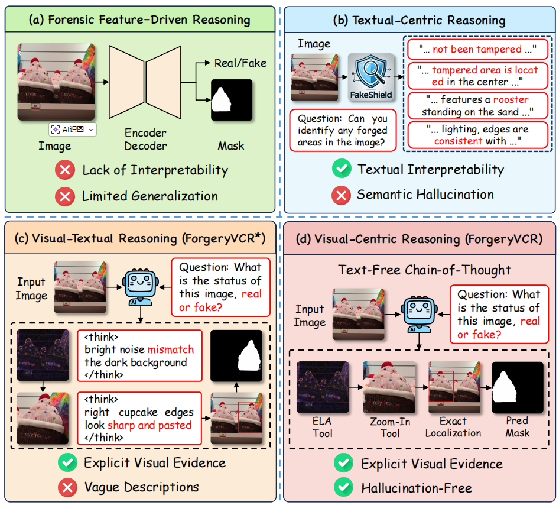
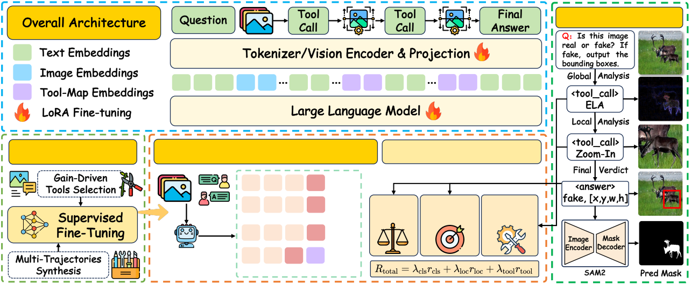
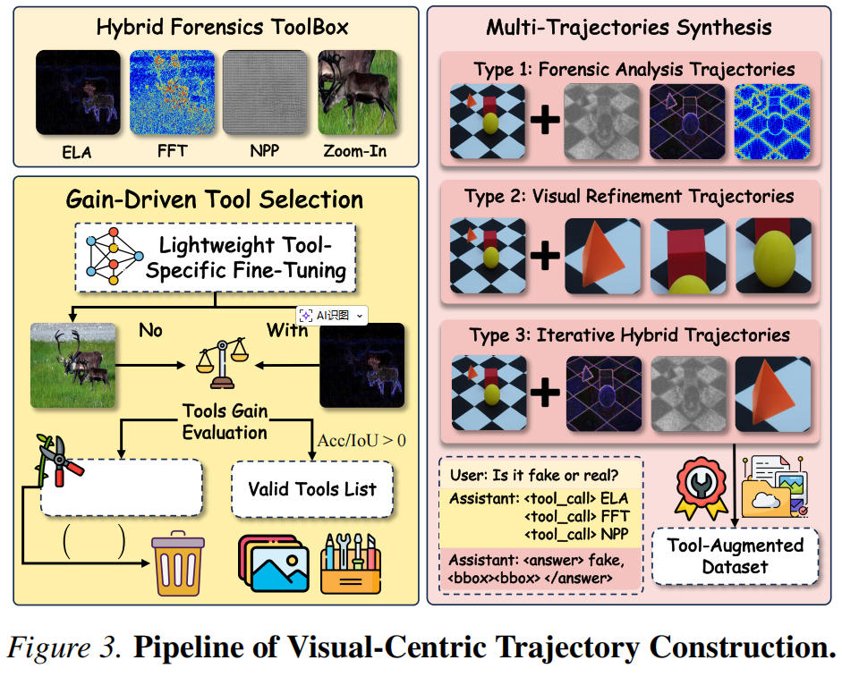
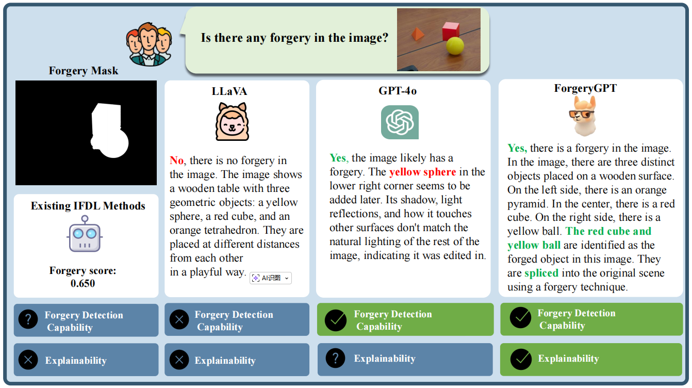
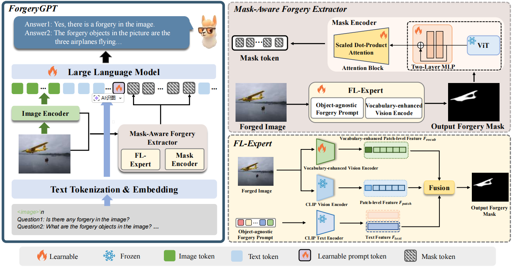
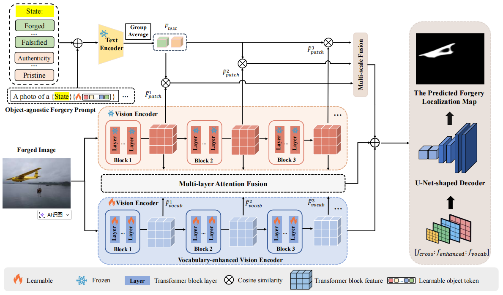
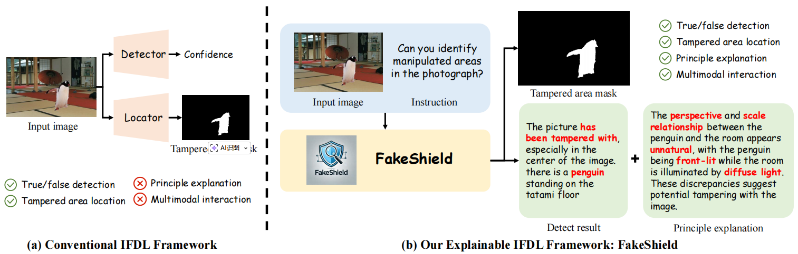
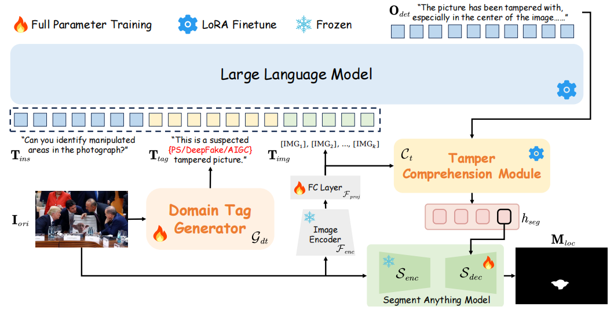
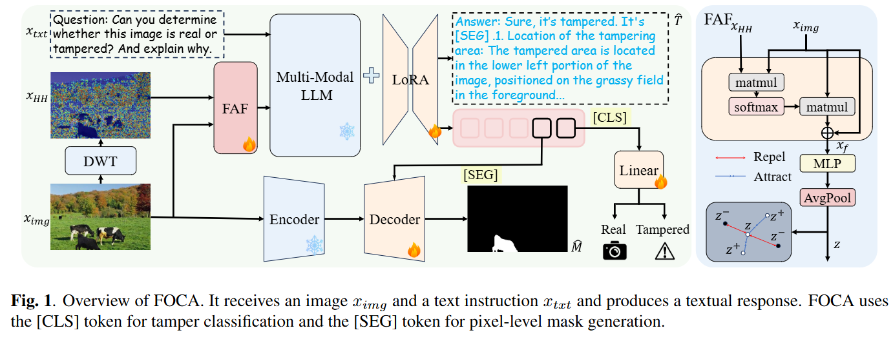
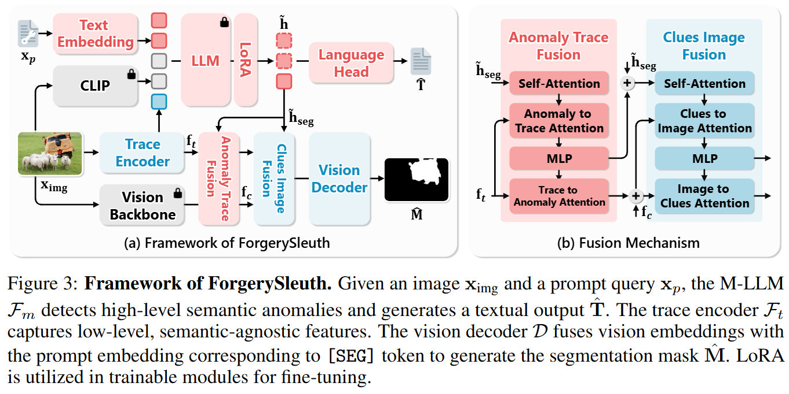

image forgery detection and localization for LLMs
用于记录使用多模态大语言模型/大语言模型来完成图像篡改检测任务的方法
>
ForgeryVCR: Visual-Centric Reasoning via Efficient Forensic Tools in MLLMs for Image Forgery Detection and Localization
摘要
现有的用于图像伪造检测与定位的多模态大语言模型（MLLMs）主要采用以文本为中心的思维链（CoT）范式。然而，若强制这些模型通过文本描述难以察觉的底层篡改痕迹，必然会导致幻觉现象——因为语言模态难以捕捉这种精细到像素级别的细微差异。为解决这一问题，我们提出ForgeryVCR框架，该框架通过视觉中心推理技术，将取证工具箱整合到系统中，将难以察觉的篡改痕迹转化为显式的视觉中间体。为实现工具的高效利用，我们提出了一种战略工具学习后训练范式，该范式涵盖监督微调（SFT，Supervised
Fine-Tuning）的收益驱动轨迹构建，以及后续由工具效用奖励引导的强化学习（RL，Reinforcement
Learning）优化。该范式使 MLLM
能够作为主动决策者，学会自发调用多视角推理路径，包括局部放大进行细粒度检查，以及分析压缩历史、噪声残差和频域中的不可见不一致性。大量实验表明，ForgeryVCR在检测和定位任务中均达到
SOTA
水平，展现出卓越的泛化能力和鲁棒性，且工具冗余度极低。
该项目页面可通过以下链接访问：https://youqiwong.github.io/projects/ForgeryVCR/
动机
与受语义偏倚限制的先前方法不同，ForgeryVCR采用视觉中心推理，将裁决基于视觉证据而非模糊描述。

模型框架
下图展示架构结构。训练流程：(1)第一阶段采用增益驱动工具选择与多轨迹合成技术构建多样化推理路径；(2)第二阶段通过工具效用奖励
GRPO
优化策略，促进策略性工具使用。右图显示推理链调用工具以暴露细微伪影实现精准定位，引导SAM2生成精细粒度掩码。

视觉中心推理策略构建流程
构建高质量推理轨迹对于将语义理解与法医执行相协调至关重要。对所有可用工具进行无差别训练往往会导致工具冗余和低效依赖。为解决这一问题，我们引入了下图所示的策略构建流程，该流程严格筛选有效工具并生成多样化推理路径。此设计确保模型仅在取证分析和视觉优化工具能产生实质性信息增益时调用这些工具。

ForgeryGPT: Multimodal Large Language Model For Explainable Image Forgery Detection and Localization
摘要
多模态大语言模型（MLLMs）如GPT4o在视觉推理和解释生成方面展现出强大能力。然而，尽管具备这些优势，它们在日益关键的图像伪造检测与定位（IFDL）任务中仍面临重大挑战——细微篡改痕迹常被忽视。此外，现有
IFDL
方法通常仅限于学习低级语义无关线索，忽视了伪造图像中丰富高级语义知识的探索，且仅提供单一结果判断，缺乏推理过程或解释说明。为解决这些问题，我们提出ForgeryGPT框架，通过从多元语言特征空间捕捉伪造图像的高阶取证知识关联，同时借助全新定制的大语言模型（LLM）架构实现可解释生成与交互对话，从而推进
IFDL
任务。具体而言，ForgeryGPT通过集成掩码感知伪造提取器增强传统LLMs，该模块能从输入图像中挖掘精确的伪造掩码信息，实现对篡改痕迹的像素级理解。这款基于掩码感知的伪造检测系统由伪造定位专家（FL-Expert）和掩码编码器组成。FL-Expert通过引入对象无关的伪造提示和词汇增强视觉编码器，实现了跨模态推理，能够精准捕捉多尺度的伪造细节，并在知识层面提升篡改定位能力。为全面训练ForgeryGPT模型，我们不仅采用标准的图像-文本特征对齐方法，还精心构建了基于多粒度伪造图像的掩码-文本对齐预训练数据集，使伪造掩码在大语言模型特征空间中实现精准匹配。随后，我们利用任务特定指令调优数据集优化模型的检测、定位和对话能力，确保在伪造场景中保持稳健性能和可解释推理。多项基准测试的实验结果表明，ForgeryGPT显著超越现有最先进方法，首次实现了
IFDL
任务与可解释多轮对话能力的融合，同时展现出跨领域数据集的卓越泛化能力。
动机
ForgeryGPT与现有方法对比。“伪造掩码”指伪造图像的真实掩码。现有
IFDL
方法仅提供伪造评分而缺乏可解释性，其伪造检测能力高度依赖阈值设置。现有多语言模型要么完全不具备伪造检测能力，要么无法为检测到的伪造提供准确的可解释性。相比之下，ForgeryGPT不仅能准确检测并定位篡改痕迹，还能精准识别伪造对象、判定伪造类型，并提供详细的推理过程。

模型框架
伪造检测模型ForgeryGPT的架构示意图。左图展示整体架构，包含图像编码器、掩码感知伪造检测器和大语言模型；右图则详细呈现掩码感知伪造检测器与伪造定位专家的结构。

FL-专家网络
该系统由对象无关的伪造提示模块、冻结的CLIP文本与视觉编码器、词汇增强视觉编码器、多层注意力融合以及U-Net形解码器组成。

FakeShield: Explainable Image Forgery Detection and Localization via Multi-modal Large Language Models
摘要
生成式AI的迅猛发展犹如一把双刃剑，既为内容创作提供便利，也使得图像篡改变得愈发容易且难以检测。尽管当前的图像伪造检测与定位（IFDL）方法总体有效，但仍面临两大挑战：1）检测原理未知的黑箱特性；2）对多样化篡改手段（如Photoshop、DeepFake、
AIGC -Editing）的泛化能力有限。为解决这些问题，我们提出可解释 IFDL
任务，并设计了FakeShield——一个多模态框架，能够评估图像真实性、生成篡改区域掩码，并基于像素级和图像级篡改线索提供判断依据。此外，我们利用GPT-4o增强现有
IFDL
数据集，创建了用于训练FakeShield篡改分析能力的多模态篡改描述数据集（MMTDSet）。同时，我们整合了领域标签引导的可解释伪造检测模块（DTEFDM）和多模态伪造定位模块（MFLM），以应对各类篡改检测的解释需求，并实现基于详细文本描述的伪造定位。大量实验表明，FakeShield能有效检测并定位各类篡改技术，相比以往
IFDL
方法，该方案具有可解释性且性能更优。
代码可在以下网址获取：https://github.com/zhipeixu/FakeShield
动机
传统方法仅提供检测结果和篡改后的掩码。我们将其扩展为多模态框架，支持详细解释和对话式交互，以实现更深入的分析。

模型框架
FakeShield流程。当输入待检测图像Iori时，系统首先通过领域标签生成器Gdt获取数据领域标签Ttag。该标签与文本指令Tins及图像标记Timg同步输入微调后的大语言模型（LLM），生成篡改检测结果及解释说明Odet。随后，Odet与Timg被输入篡改理解模块Ct，其中

FOCA: Frequency-Oriented Cross-Domain Forgery Detection, Localization and Explanation via Multi-Modal Large Language Model

ForgerySleuth: Empowering Multimodal Large Language Models for Image Manipulation Detection
